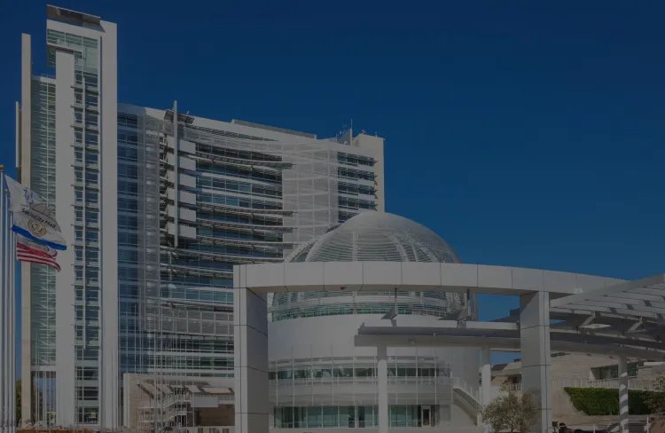

San Jose City Hall
Fondation Cartier
Au cœur de la Silicon Valley, le San Jose City Hall se dresse comme une déclaration architecturale moderne et fonctionnelle. Conçu par le célèbre architecte Richard Meier, cet édifice municipal, incarne l'engagement de la ville envers l'innovation et la gouvernance transparente.
Explorez avec nous l'histoire de cet édifice qui sert de point focal à la capitale technologique de la Californie.
par Viktor Ghirardelli
Publié aujourd’hui | Temps de lecture 1 min
Genèse et Réalisation
La genèse du San Jose City Hall est le fruit d'une vision commune entre la municipalité de San Jose et Richard Meier, qui a été choisi pour concevoir ce symbole de gouvernance moderne. Inauguré en 2005, l'édifice reflète l'esthétique caractéristique de Meier, mettant en avant les lignes épurées et les formes géométriques qui définissent son style contemporain.
Description Visuelle et Emplacement
Situé au cœur du centre-ville de San Jose, le City Hall se distingue par sa façade en verre et ses formes architecturales distinctives. Les espaces intérieurs, baignés de lumière naturelle, sont conçus pour favoriser la transparence et l'interaction entre les citoyens et le gouvernement. Les jardins environnants offrent un espace de détente propice à la rencontre et à la réflexion.
Le San Jose City Hall, avec son atrium ouvert, ses salles de réunion innovantes et ses installations durables, incarne les valeurs de la Silicon Valley en matière d'efficacité, de transparence et d'engagement envers le progrès.